在本實驗中，您將實作如何：
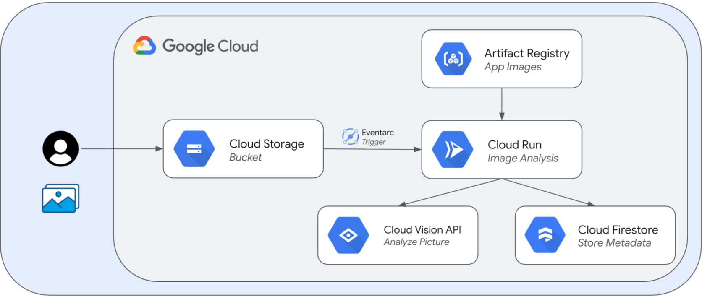
應用程式流程：
在開始之前，您需要：
建立一台 VM 來執行本 Workshop 的建置工作：
建議規格：
透過 Console 建立 VM：
spring-native-workshop-vm（或您喜歡的名稱）asia-east1 (台灣)anye2-standard-4 (4 vCPUs, 16 GB Memory)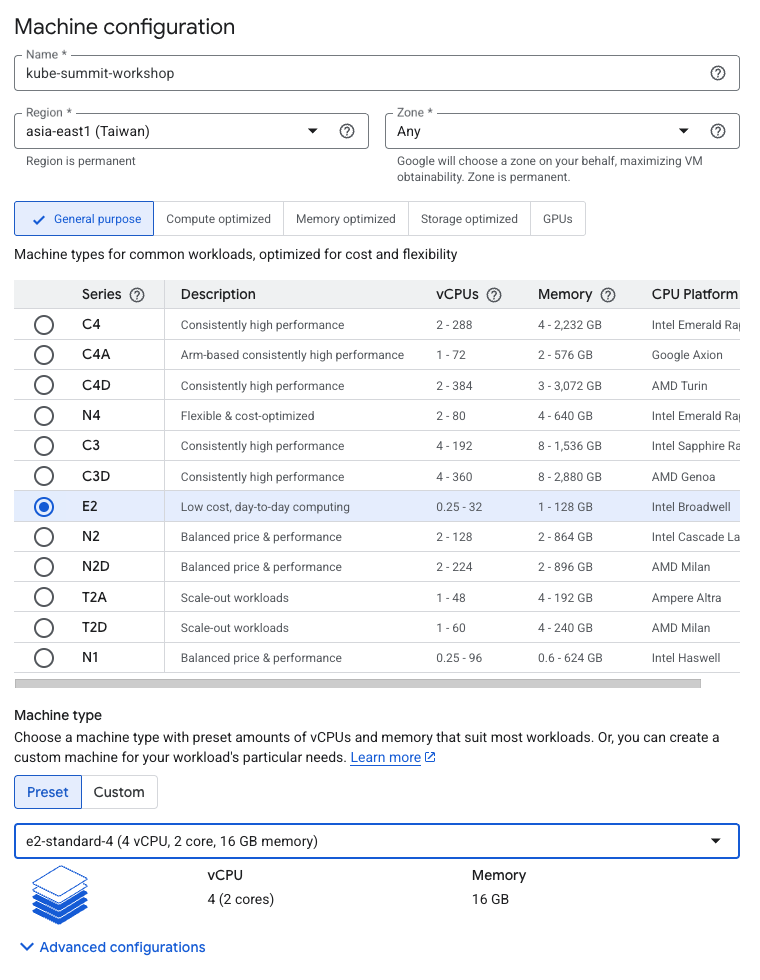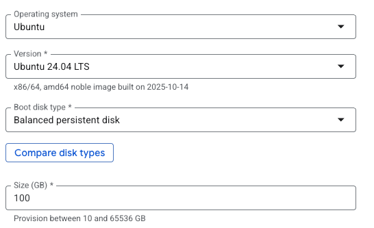
連線到 VM：
ssh，接著就可以看到連線畫面操作 VM，如下圖：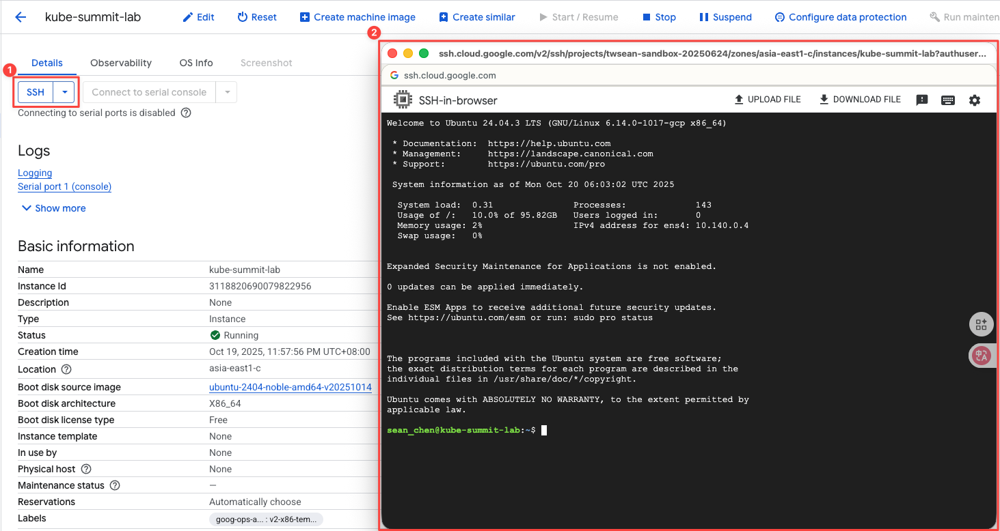
注意：Native Image 編譯需要較多記憶體，建議至少使用 16 GB 記憶體的機器類型。
連線到 VM 後，安裝以下工具（可使用 Lab/env/setup.sh 腳本自動安裝）：
快速安裝：
# Clone workshop repository (如果您的專案在 GitHub)
git clone https://github.com/mcgcrtt/KubeSummit-2025-by-iThome.git
cd spring-native-workshop/Lab
# 執行安裝腳本
chmod +x ./env/setup.sh
./env/setup.sh
或手動安裝每個工具（請參考 Lab/env/setup.sh 腳本內容）。
確認使用的是 GraalVM 而非 OpenJDK：
# 載入 SDKMAN 環境
. $HOME/.sdkman/bin/sdkman-init.sh
# 檢查當前 Java 版本
sdk current java
# 驗證 JAVA_HOME
echo $JAVA_HOME
# 登入 Google Cloud
gcloud auth login
# 設定應用程式預設憑證 (ADC)
gcloud auth application-default login
# 設定專案 ID
export PROJECT_ID=$(gcloud config get-value project)
export PROJECT_NUMBER=$(gcloud projects describe $PROJECT_ID --format='value(projectNumber)')
# 設定 Bucket 名稱 (後續需要建立 GCS Bucket)
export BUCKET_PICTURES=uploaded-pictures-${PROJECT_ID}
# 設定 gcloud 預設值
gcloud config set project ${PROJECT_ID}
gcloud config set run/platform managed
gcloud config set eventarc/location asia-east1
# 啟用 Vision API (圖片分析)、Cloud Functions API、Cloud Build API、Cloud Run API、Artifact Registry API、Eventarc API、Pub/Sub API (Eventarc 需要)
gcloud services enable \
vision.googleapis.com \
cloudfunctions.googleapis.com \
cloudbuild.googleapis.com \
run.googleapis.com \
artifactregistry.googleapis.com \
eventarc.googleapis.com \
pubsub.googleapis.com \
firestore.googleapis.com
gcloud CLI 或者從 GCP Console 建立：# 建立 JIT 版本的 Docker Repository
gcloud artifacts repositories create jit-image-docker-repo \
--repository-format=docker \
--location=asia-east1 \
--description="JIT version Docker images"
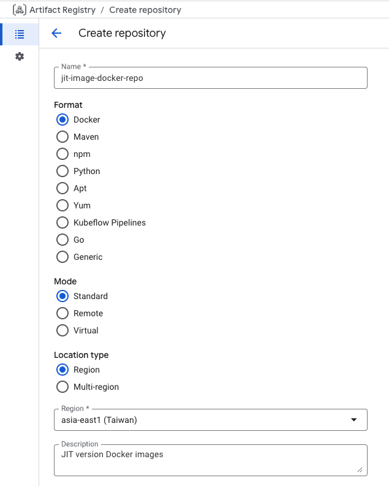
# 建立 Native 版本的 Docker Repository
gcloud artifacts repositories create native-image-docker-repo \
--repository-format=docker \
--location=asia-east1 \
--description="Native version Docker images"
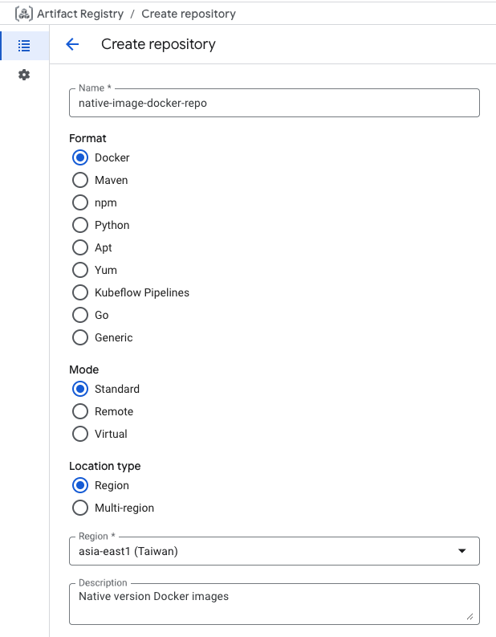
gcloud CLI 或者從 GCP Console 建立，用於儲存上傳圖片的 GCS Bucket：# 建立 Bucket (位於歐洲區域)
gsutil mb -l asia-east1 gs://${BUCKET_PICTURES}
# 啟用統一的 Bucket 層級存取控制
gsutil uniformbucketlevelaccess set on gs://${BUCKET_PICTURES}
# 設定公開讀取權限
gsutil iam ch allUsers:objectViewer gs://${BUCKET_PICTURES}
為了讓 Cloud Storage 能夠發送 Pub/Sub 事件，需要授予服務帳戶 pubsub.publisher 權限：
# 取得 Cloud Storage 服務帳戶
SERVICE_ACCOUNT="$(gsutil kms serviceaccount -p ${PROJECT_ID})"
# 授予 pubsub.publisher 角色
gcloud projects add-iam-policy-binding ${PROJECT_ID} \
--member="serviceAccount:${SERVICE_ACCOUNT}" \
--role='roles/pubsub.publisher'
asia-east1）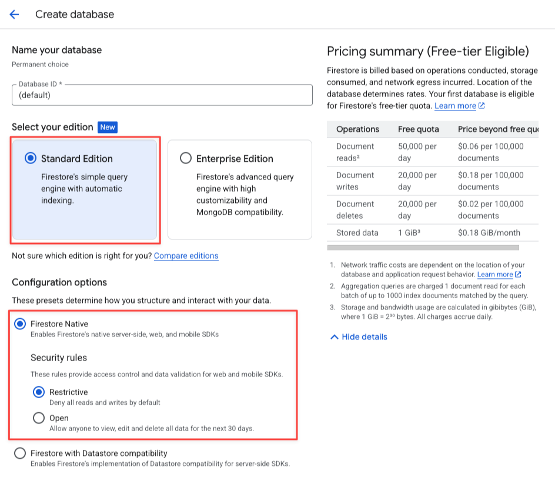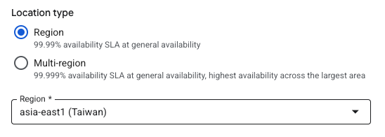
在 Firestore Console 中：
pictures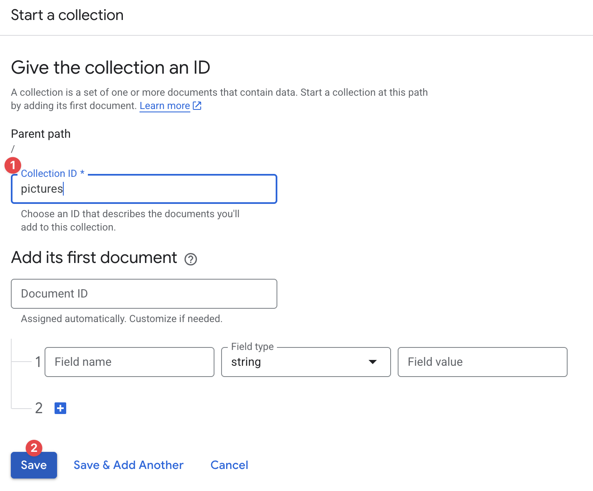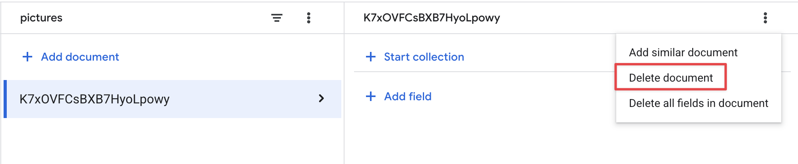
# 建立用於查詢的複合索引
gcloud firestore indexes composite create \
--collection-group=pictures \
--field-config field-path=thumbnail,order=descending \
--field-config field-path=created,order=descending
注意：索引建立可能需要數分鐘時間。
首先，我們來看看如何在 pom.xml 使用 BOM 中啟用 Java 用戶端程式庫。
開啟 pom.xml 檔案，其中列出 Java 應用程式的依附元件。著重於 Vision、Cloud Storage 和 Firestore API 的用法：
<?xml version="1.0" encoding="UTF-8"?>
<project xmlns="http://maven.apache.org/POM/4.0.0" xmlns:xsi="http://www.w3.org/2001/XMLSchema-instance"
xsi:schemaLocation="http://maven.apache.org/POM/4.0.0 https://maven.apache.org/xsd/maven-4.0.0.xsd">
<modelVersion>4.0.0</modelVersion>
<parent>
<groupId>org.springframework.boot</groupId>
<artifactId>spring-boot-starter-parent</artifactId>
<version>3.2.0-M3</version>
<relativePath/> <!-- lookup parent from repository -->
</parent>
<groupId>services</groupId>
<artifactId>image-analysis</artifactId>
<version>0.0.1</version>
<name>image-analysis</name>
<description>Spring App for Image Analysis</description>
<properties>
<java.version>17</java.version>
<maven.compiler.target>17</maven.compiler.target>
<maven.compiler.source>17</maven.compiler.source>
<spring-cloud.version>2023.0.0-M2</spring-cloud.version>
<testcontainers.version>1.19.1</testcontainers.version>
</properties>
...
<dependencyManagement>
<dependencies>
<dependency>
<groupId>com.google.cloud</groupId>
<artifactId>libraries-bom</artifactId>
<version>26.24.0</version>
<type>pom</type>
<scope>import</scope>
</dependency>
</dependencies>
</dependencyManagement>
—
<dependencies>
<dependency>
<groupId>org.springframework.boot</groupId>
<artifactId>spring-boot-starter-web</artifactId>
</dependency>
<dependency>
<groupId>org.springframework.cloud</groupId>
<artifactId>spring-cloud-function-web</artifactId>
</dependency>
<dependency>
<groupId>com.google.cloud.functions</groupId>
<artifactId>functions-framework-api</artifactId>
<version>1.1.0</version>
<type>jar</type>
</dependency>
<dependency>
<groupId>com.google.cloud</groupId>
<artifactId>google-cloud-firestore</artifactId>
</dependency>
<dependency>
<groupId>com.google.cloud</groupId>
<artifactId>google-cloud-vision</artifactId>
</dependency>
<dependency>
<groupId>com.google.cloud</groupId>
<artifactId>google-cloud-storage</artifactId>
</dependency>
注意事項：可以在 API 程式庫 中找到 Java 用戶端程式庫的相關資訊
這項功能是在 EventController.java 類別中實作。每當有新圖片上傳至值區時，服務都會收到通知，以便處理：
@RestController
public class EventController {
private static final Logger logger = LoggerFactory.getLogger(EventController.class);
private static final List<String> requiredFields = Arrays.asList("ce-id", "ce-source", "ce-type", "ce-specversion");
@RequestMapping(value = "/", method = RequestMethod.POST)
public ResponseEntity<String> receiveMessage(
@RequestBody Map<String, Object> body, @RequestHeader Map<String, String> headers) throws IOException, InterruptedException, ExecutionException {
...
}
程式碼會繼續驗證 Cloud Events 標頭：
System.out.println("Header elements");
for (String field : requiredFields) {
if (headers.get(field) == null) {
String msg = String.format("Missing expected header: %s.", field);
System.out.println(msg);
return new ResponseEntity<String>(msg, HttpStatus.BAD_REQUEST);
} else {
System.out.println(field + " : " + headers.get(field));
}
}
System.out.println("Body elements");
for (String bodyField : body.keySet()) {
System.out.println(bodyField + " : " + body.get(bodyField));
}
if (headers.get("ce-subject") == null) {
String msg = "Missing expected header: ce-subject.";
System.out.println(msg);
return new ResponseEntity<String>(msg, HttpStatus.BAD_REQUEST);
}
參考完整程式碼：EventController.java
現在可以建立 Requests，程式碼會準備一項要求並傳送至 Vision API：
try (ImageAnnotatorClient vision = ImageAnnotatorClient.create()) {
List<AnnotateImageRequest> requests = new ArrayList<>();
ImageSource imageSource = ImageSource.newBuilder()
.setGcsImageUri("gs://" + bucketName + "/" + fileName)
.build();
Image image = Image.newBuilder()
.setSource(imageSource)
.build();
Feature featureLabel = Feature.newBuilder()
.setType(Type.LABEL_DETECTION)
.build();
Feature featureImageProps = Feature.newBuilder()
.setType(Type.IMAGE_PROPERTIES)
.build();
Feature featureSafeSearch = Feature.newBuilder()
.setType(Type.SAFE_SEARCH_DETECTION)
.build();
AnnotateImageRequest request = AnnotateImageRequest.newBuilder()
.addFeatures(featureLabel)
.addFeatures(featureImageProps)
.addFeatures(featureSafeSearch)
.setImage(image)
.build();
requests.add(request);
參考完整程式碼：EventController.java
我們要求提供 Vision API 的 3 項主要功能：
此時，我們可以呼叫 Vision API：
...
logger.info("Calling the Vision API...");
BatchAnnotateImagesResponse result = vision.batchAnnotateImages(requests);
List<AnnotateImageResponse> responses = result.getResponsesList();
...
參考完整程式碼：EventController.java
以下是 Vision API 的回應範例：
{
"faceAnnotations": [],
"landmarkAnnotations": [],
"logoAnnotations": [],
"labelAnnotations": [
{
"locations": [],
"properties": [],
"mid": "/m/01yrx",
"locale": "",
"description": "Cat",
"score": 0.9959855675697327,
"confidence": 0,
"topicality": 0.9959855675697327,
"boundingPoly": null
},
✄ - - - ✄
],
"textAnnotations": [],
"localizedObjectAnnotations": [],
"safeSearchAnnotation": {
"adult": "VERY_UNLIKELY",
"spoof": "UNLIKELY",
"medical": "VERY_UNLIKELY",
"violence": "VERY_UNLIKELY",
"racy": "VERY_UNLIKELY",
"adultConfidence": 0,
"spoofConfidence": 0,
"medicalConfidence": 0,
"violenceConfidence": 0,
"racyConfidence": 0,
"nsfwConfidence": 0
},
"imagePropertiesAnnotation": {
"dominantColors": {
"colors": [
{
"color": {
"red": 203,
"green": 201,
"blue": 201,
"alpha": null
},
"score": 0.4175916016101837,
"pixelFraction": 0.44456374645233154
},
✄ - - - ✄
]
}
},
"error": null,
"cropHintsAnnotation": {
"cropHints": [
{
"boundingPoly": {
"vertices": [
{ "x": 0, "y": 118 },
{ "x": 1177, "y": 118 },
{ "x": 1177, "y": 783 },
{ "x": 0, "y": 783 }
],
"normalizedVertices": []
},
"confidence": 0.41695669293403625,
"importanceFraction": 1
}
]
},
"fullTextAnnotation": null,
"webDetection": null,
"productSearchResults": null,
"context": null
}
如果沒有傳回任何錯誤，可以繼續：
if (responses.size() == 0) {
logger.info("No response received from Vision API.");
return new ResponseEntity<String>(msg, HttpStatus.BAD_REQUEST);
}
AnnotateImageResponse response = responses.get(0);
if (response.hasError()) {
logger.info("Error: " + response.getError().getMessage());
return new ResponseEntity<String>(msg, HttpStatus.BAD_REQUEST);
}
參考完整程式碼：EventController.java
取得在圖片中認出的內容、類別或主題標籤：
List<String> labels = response.getLabelAnnotationsList().stream()
.map(annotation -> annotation.getDescription())
.collect(Collectors.toList());
logger.info("Annotations found:");
for (String label: labels) {
logger.info("- " + label);
}
參考完整程式碼：EventController.java
瞭解圖片的主要顏色：
String mainColor = "#FFFFFF";
ImageProperties imgProps = response.getImagePropertiesAnnotation();
if (imgProps.hasDominantColors()) {
DominantColorsAnnotation colorsAnn = imgProps.getDominantColors();
ColorInfo colorInfo = colorsAnn.getColors(0);
mainColor = rgbHex(
colorInfo.getColor().getRed(),
colorInfo.getColor().getGreen(),
colorInfo.getColor().getBlue());
logger.info("Color: " + mainColor);
}
參考完整程式碼：EventController.java
檢查圖片是否能安全顯示：
boolean isSafe = false;
if (response.hasSafeSearchAnnotation()) {
SafeSearchAnnotation safeSearch = response.getSafeSearchAnnotation();
isSafe = Stream.of(
safeSearch.getAdult(), safeSearch.getMedical(), safeSearch.getRacy(),
safeSearch.getSpoof(), safeSearch.getViolence())
.allMatch( likelihood ->
likelihood != Likelihood.LIKELY && likelihood != Likelihood.VERY_LIKELY
);
logger.info("Safe? " + isSafe);
}
參考完整程式碼：EventController.java
檢查成人 / 假冒 / 醫療 / 暴力 / 兒童不宜的特徵。
如果安全搜尋的結果沒有問題，我們可以將 Metadata 儲存在 Firestore 中：
// Saving result to Firestore
if (isSafe) {
ApiFuture<WriteResult> writeResult =
eventService.storeImage(fileName, labels,
mainColor);
logger.info("Picture metadata saved in Firestore at " +
writeResult.get().getUpdateTime());
}
參考完整程式碼：EventController.java
EventService.java 負責將圖片分析結果儲存到 Firestore：
public ApiFuture<WriteResult> storeImage(String fileName,
List<String> labels,
String mainColor) {
FirestoreOptions firestoreOptions = FirestoreOptions.getDefaultInstance();
Firestore pictureStore = firestoreOptions.getService();
DocumentReference doc = pictureStore.collection("pictures").document(fileName);
Map<String, Object> data = new HashMap<>();
data.put("labels", labels);
data.put("color", mainColor);
data.put("created", new Date());
return doc.set(data, SetOptions.merge());
}
參考完整程式碼：EventService.java
重要提醒：前面在 GCP Console 建立 Firestore 等操作時，可能會導致 VM 的 SSH 連線逾時中斷。重新連線後，請務必確認您目前的工作目錄是否正確。
執行以下指令確認並切換到正確的目錄：
# 確認當前目錄
pwd
# 如果不在 Lab 目錄，請切換到正確路徑
cd ~/spring-native-workshop/Lab
# 使用 Maven Wrapper 建置專案
./mvnw package -Pjit
建置完成後，會在 target/ 目錄下產生 JAR 檔案：image-analysis-0.0.1.jar
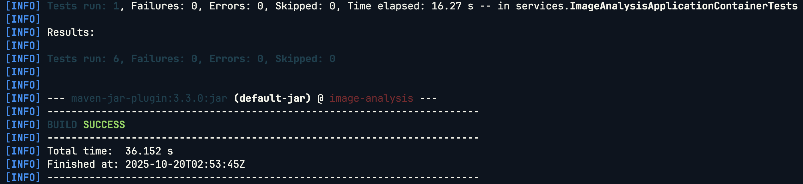
# 啟動應用程式
java -jar ./target/image-analysis-0.0.1.jar
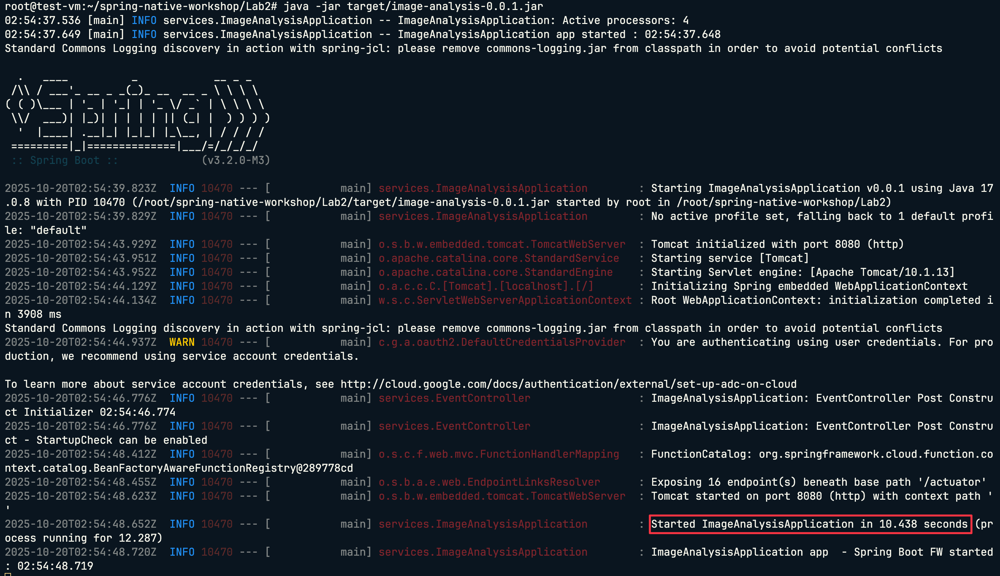
# 使用 jit profile 建置 Docker 映像檔
./mvnw spring-boot:build-image -Pjit
這個指令會：
image-analysis-maven-jit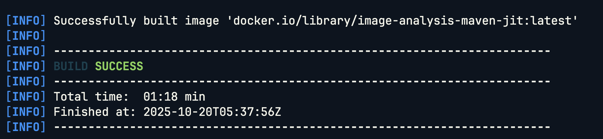
# 啟動應用程式
docker run --rm image-analysis-maven-jit:latest
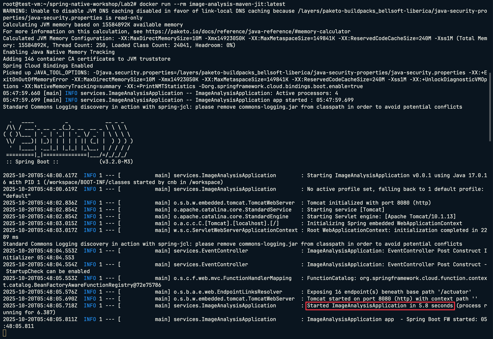
重要提醒：前面在 GCP Console 建立 Firestore 等操作時，可能會導致 VM 的 SSH 連線逾時中斷。重新連線後，請務必確認您目前的工作目錄是否正確。
執行以下指令確認並切換到正確的目錄：
# 確認當前目錄
pwd
# 如果不在 Lab 目錄，請切換到正確路徑
cd ~/spring-native-workshop/Lab
# 使用 native profile 建置原生執行檔
./mvnw native:compile -Pnative
重要：Native 編譯需要較長時間，請耐心等待。
建置完成後，會在 target/ 目錄下產生原生執行檔：image-analysis
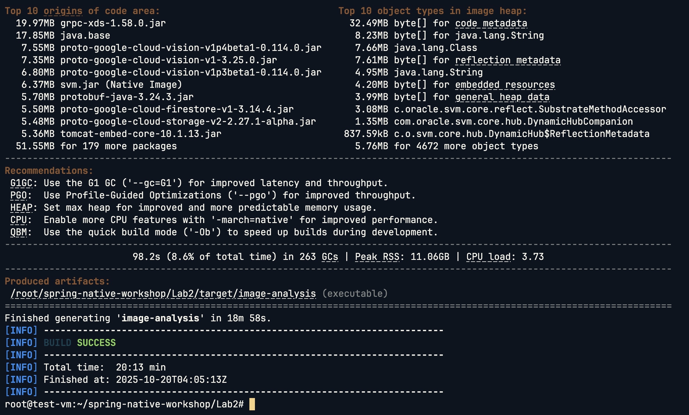
# 執行原生執行檔
./target/image-analysis
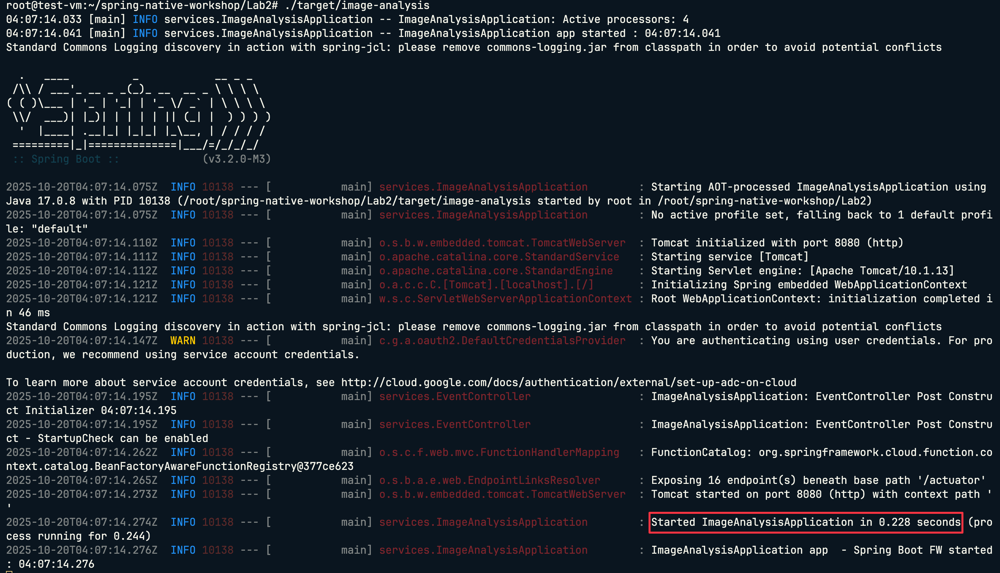
# 使用 native profile 建置 Docker 映像檔
./mvnw spring-boot:build-image -Pnative
這個指令會：
image-analysis-maven-native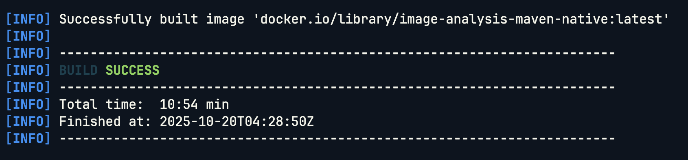
# 啟動應用程式
docker run --rm image-analysis-maven-native:latest
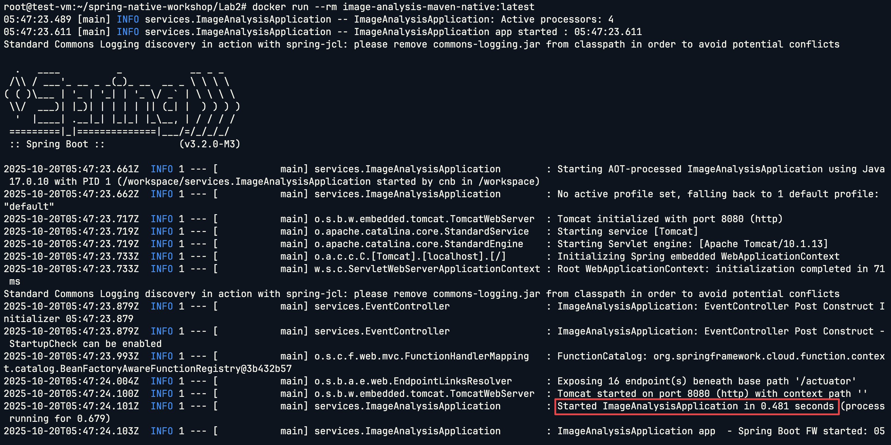
# 查看兩個版本的映像檔大小
docker images | grep image-analysis
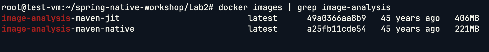
測試 JIT 版本：
docker run --rm image-analysis-maven-jit
觀察啟動日誌中的時間。
測試 Native 版本：
docker run --rm image-analysis-maven-native
觀察啟動日誌中的時間。
指標 | JIT 版本 | Native 版本 | 改善幅度 |
映像檔大小 | ~400MB | ~200MB | 減少 50% |
啟動時間 | ~5-10 秒 | ~0.05-1 秒 | 快 95% |
建置時間 | ~1-3 分鐘 | ~10-20 分鐘 | - |
# 設定 Docker 認證
gcloud auth configure-docker asia-east1-docker.pkg.dev
# 標記映像檔
docker tag image-analysis-maven-jit asia-east1-docker.pkg.dev/$PROJECT_ID/jit-image-docker-repo/jit-image:v1
# 推送到 Artifact Registry
docker push asia-east1-docker.pkg.dev/$PROJECT_ID/jit-image-docker-repo/jit-image:v1
gcloud run deploy my-jit-service \
--image asia-east1-docker.pkg.dev/$PROJECT_ID/jit-image-docker-repo/jit-image:v1 \
--region asia-east1 \
--memory 2Gi \
--allow-unauthenticated
部署完成後，進入 GCP Console 查看 Cloud Run Console 服務。
# 標記映像檔
docker tag image-analysis-maven-native asia-east1-docker.pkg.dev/$PROJECT_ID/native-image-docker-repo/native-image:v1
# 推送到 Artifact Registry
docker push asia-east1-docker.pkg.dev/$PROJECT_ID/native-image-docker-repo/native-image:v1
gcloud run deploy my-native-service \
--image asia-east1-docker.pkg.dev/$PROJECT_ID/native-image-docker-repo/native-image:v1 \
--region asia-east1 \
--memory 2Gi \
--allow-unauthenticated
部署完成後，進入 GCP Console 查看 Cloud Run Console 服務。
Eventarc 可以讓 Cloud Storage 事件自動觸發 Cloud Run 服務。
gcloud eventarc triggers create image-analysis-jit-trigger \
--destination-run-service=my-jit-service \
--destination-run-region=asia-east1 \
--location=asia-east1 \
--event-filters="type=google.cloud.storage.object.v1.finalized" \
--event-filters="bucket=uploaded-pictures-${PROJECT_ID}" \
--service-account=${PROJECT_NUMBER}-compute@developer.gserviceaccount.com
gcloud eventarc triggers create image-analysis-native-trigger \
--destination-run-service=my-native-service \
--destination-run-region=asia-east1 \
--location=asia-east1 \
--event-filters="type=google.cloud.storage.object.v1.finalized" \
--event-filters="bucket=uploaded-pictures-${PROJECT_ID}" \
--service-account=${PROJECT_NUMBER}-compute@developer.gserviceaccount.com
# 列出所有 triggers
gcloud eventarc triggers list --location=asia-east1
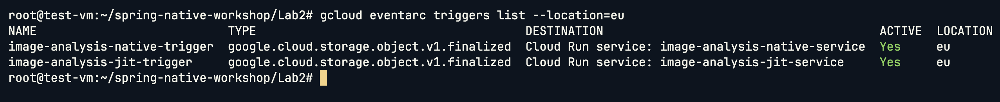
準備一張測試圖片，然後上傳到 Cloud Storage (可以使用 gcloud CLI 或從 GCP Console 上傳)：
# 上傳圖片
gsutil cp /path/to/your/image.jpg gs://${BUCKET_PICTURES}/
# 或使用 gcloud 指令
gcloud storage cp /path/to/your/image.jpg gs://${BUCKET_PICTURES}/
JIT Service Trigger:
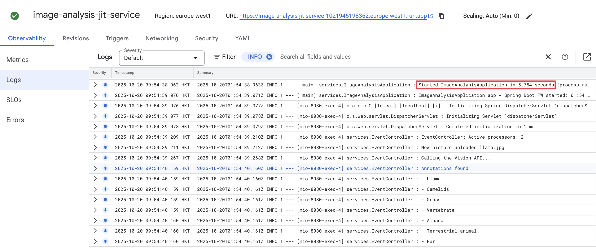
Native Service Trigger:
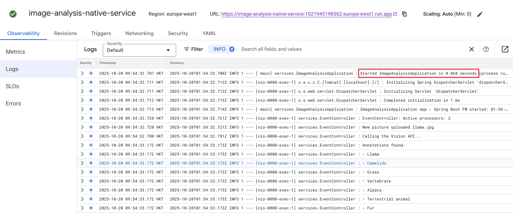
pictures collectionmy-jit-service 和 my-native-service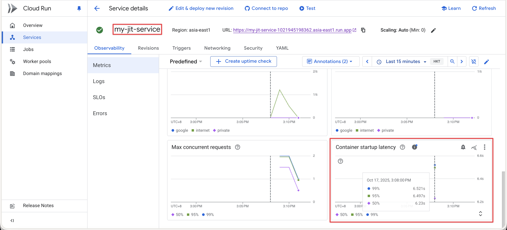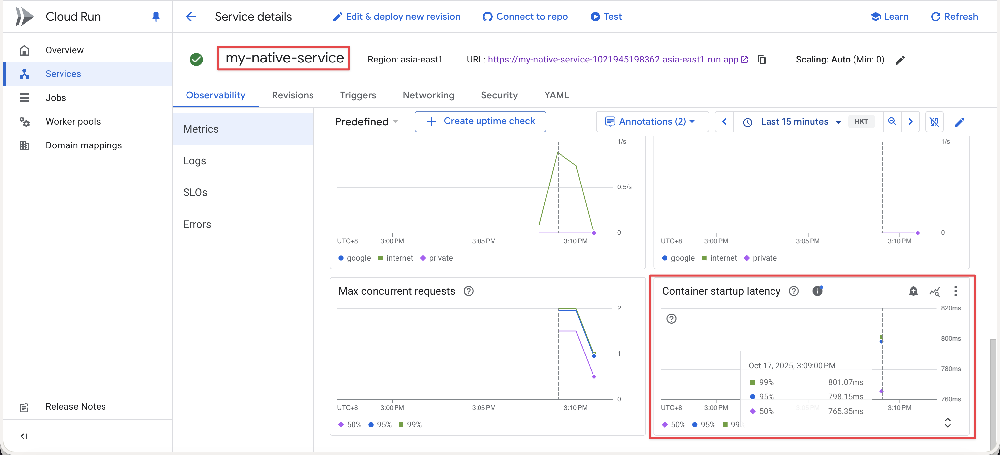
完成實驗後，記得清理資源以避免產生費用，也可以從 GCP Console 刪除！
gcloud eventarc triggers delete image-analysis-jit-trigger --location=asia-east1 --quiet
gcloud eventarc triggers delete image-analysis-native-trigger --location=asia-east1 --quiet
gcloud run services delete my-jit-service --region asia-east1 --quiet
gcloud run services delete my-native-service --region asia-east1 --quiet
gcloud artifacts repositories delete jit-image-docker-repo --location=asia-east1 --quiet
gcloud artifacts repositories delete native-image-docker-repo --location=asia-east1 --quiet
# 刪除 Bucket 及其內容
gsutil rm -r gs://${BUCKET_PICTURES}
注意：Firestore 資料庫需要透過 Console 手動刪除
完成 Workshop 後，記得刪除 VM 以避免持續產生費用。
透過 Console 刪除：
spring-native-workshop-vm）透過 gcloud 指令刪除：
gcloud compute instances delete spring-native-workshop-vm \
--zone=asia-east1-c \
--quiet
提示：刪除 VM 時，預設會一併刪除開機磁碟。如果您想保留磁碟以便日後使用，請在刪除時取消勾選「刪除開機磁碟」選項。
特性 | JIT 編譯 | Native Image |
編譯時機 | 執行時編譯 | 建置時編譯 |
啟動速度 | 較慢 (5-10秒) | 極快 (<0.1秒) |
記憶體使用 | 較高 | 較低 |
執行效能 | 長時間運行後最佳 | 立即最佳 |
建置時間 | 快 (1-5分鐘) | 慢 (10-20分鐘) |
映像檔大小 | 較大 (~400MB) | 較小 (~200MB) |
最佳使用場景 | 長期運行的服務 | Serverless/容器化應用 |
✅ 適合使用：
❌ 不建議使用：
恭喜完成 Spring Native Workshop！
在本實驗中，您已經：
感謝參與本 Workshop！如有任何問題或建議，歡迎回饋。